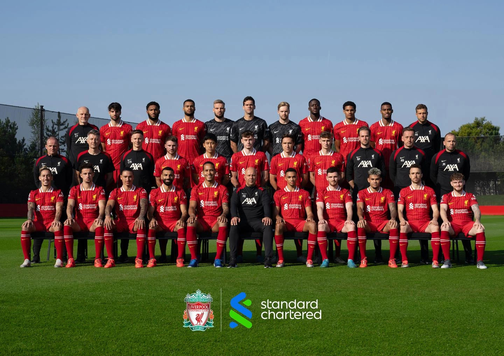

Welcome To Our Website
Liverpool FC is the English men's football club. For the city in which the football club is situated, see Liverpool. For the affiliated women's football club, see Liverpool F.C. Women. For the Uruguayan men's football club

Already nicknamed "The Reds", it was under Shankly in the 60s that the team first adopted the distinctive all-red home strip which has been used ever since. Also adopted under Shankly's tenure was the club's anthem "You'll Never Walk Alone".
 Our Offcial X Account